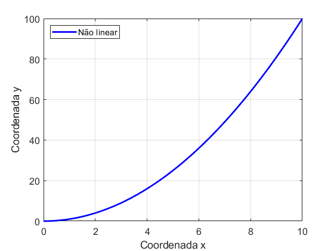
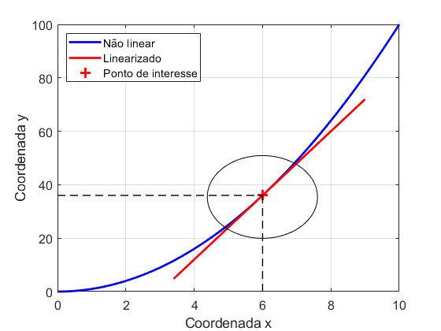

Linearização


Função de transferência
\(G(s) = \frac{K_g}{\tau s + 1}\)
Espaço de estados
\( \begin{eqnarray} \dot{x} &=& A x + B u \nonumber \\ y &=& C x + D u \nonumber \end{eqnarray} \)
Controladores: P, PI, PD, PID
Controladores: Alocação, LQR
Modelo no Espaço de Estados (Não linear):
\(\dot{x} = f(x,u,t)\)
\(y = g(x,u,t)\)
É possível aproximar o sistema não linear por um sistema LTI?
\( \dot{x} = f(x,u,t) \qquad \xrightarrow[\text{Linearização}]{\text{Aproximação}} \qquad \dot{x} = A x + B u \)
Motivação
- Projeto de controladores
- Verificar estabilidade e comportamento dinâmico
- Simulação mais rápida (Hardware in the loop)
Inspiração
Equação não linear: \(y = x^2\)
Inspiração

Equação não linear: \(y = x^2\)
Região de interesse em torno de \((x_{in},y_{in})=(6,36)\).
Inspiração
Equação não linear: \(y = x^2\)
Região de interesse em torno de \((x_{in},y_{in})=(6,36)\)
\(y_{linear} = y_{in} + 2 x_{in} (x - x_{in}) \qquad \rightarrow \qquad y_{linear} = 36 + 12 (x - 6)\)
Série de Taylor
Uma função não linear \(y = f(x)\) pode ser representada por uma série de Taylor em torno do ponto \((\overline{x},\overline{y})\)
\(y=f(x)=f(\overline{x})+(x-\overline{x})\left.\frac{d f}{d x}\right|_{x=\overline{x}}+\frac{1}{2 !}(x-\overline{x})^{2}\left.\frac{d^{2} f}{d x^{2}}\right|_{x=\overline{x}}+\cdots\)
Se a variação \( ( x - \overline{x} ) \) for pequena, podemos truncar a série de Taylor no termo de primeira ordem
\(y=f(x)=f(\overline{x})+(x-\overline{x})\left.\frac{d f}{d x}\right|_{x=\overline{x}}\)
\(y - \overline{y} = K(x - \overline{x})\)
\(\Delta y = K \Delta x\)
Onde \(\qquad K = \left.\frac{d f}{d x}\right|_{x=\overline{x}}\) \(\qquad \Delta y = y - \overline{y}\) \(\qquad \Delta x = x - \overline{x}\)
Exemplos
1) Linearize a função \(f(x) = x^2\) em torno do ponto \(x_{op} = 4\).
2) Determine o valor aproximado de \(y=\sqrt{10}\) por meio da linearização, sabendo que \(\overline{y} = \sqrt{9}\)
Linearização de sistema dinâmicos
Os sistemas dinâmicos não lineares são escritos como
\(\begin{aligned} \dot{x}_{1} &= f_{1}\left(x_{1}, x_{2}, \cdots x_{n}, u_{1}, u_{2}, \cdots u_{m}\right) \\ \dot{x}_{2} &= f_{2}\left(x_{1}, x_{2}, \cdots x_{n}, u_{1}, u_{2}, \cdots u_{m}\right) \\ \vdots &= \vdots \\ \dot{x}_{n} &=f_{n}\left(x_{1}, x_{2}, \cdots x_{n}, u_{1}, u_{2}, \cdots u_{m}\right) \end{aligned}\)
Logo, teremos as variações
\(\begin{array}{ccc}{\Delta x_{1}=\left(x_{1}-\overline{x}_{1}\right)} & & {\Delta u_{1}=\left(u_{1}-\overline{u}_{1}\right)} \\ {\Delta x_{2}=\left(x_{2}-\overline{x}_{2}\right)} & & {\Delta u_{2}=\left(u_{2}-\overline{u}_{2}\right)} \\ {\vdots} & \qquad \qquad & {\vdots} \\ {\Delta x_{n}=\left(x_{n}-\overline{x}_{n}\right)} & & {\Delta u_{m}=\left(u_{m}-\overline{u}_{m}\right)}\end{array}\)
Linearização de sistema dinâmicos
Os sistemas dinâmicos linearizados são escritos como
\(\begin{array}{c} \begin{aligned} \frac{d}{d t}\left(\Delta x_{1}\right)=& a_{11} \Delta x_{1}+a_{12} \Delta x_{2}+\cdots+a_{1 n} \Delta x_{n}+\\ & b_{11} \Delta u_{1}+b_{12} \Delta u_{2}+\cdots+b_{1 m} \Delta u_{m} \end{aligned} \\ \begin{aligned} \frac{d}{d t}\left(\Delta x_{2}\right)=& a_{21} \Delta x_{1}+a_{22} \Delta x_{2}+\cdots+a_{2 n} \Delta x_{n}+\\ & b_{21} \Delta u_{1}+b_{22} \Delta u_{2}+\cdots+b_{2 m} \Delta u_{m} \end{aligned} \\ \vdots \\ \begin{aligned} \frac{d}{d t}\left(\Delta x_{n}\right)=& a_{n 1} \Delta x_{1}+a_{n 2} \Delta x_{2}+\cdots+a_{m n} \Delta x_{n}+\\ & b_{n 1} \Delta u_{1}+b_{n 2} \Delta u_{2}+\cdots+b_{n m} \Delta u_{m} \end{aligned} \end{array}\)
Onde
\(a_{i j}=\left.\frac{\partial f_{i}}{\partial x_{j}}\right|_{\overline{x}, \overline{u}} \mathrm{e} \quad b_{i j}=\left.\frac{\partial f_{i}}{\partial u_{j}}\right|_{\overline{x}, \overline{u}}\)
Exercício 1
Considere o problema de se obter um modelo linear aproximado da seguinte equação diferencial que representa o comportamento dinâmico do nível \(h(t)\) de um tanque com uma vazão de alimentação \(u(t)\) e uma saída proporcional à \(\sqrt{h(t)}\)
\(\dot{h}(t) = - \alpha \sqrt{h(t)} + \beta u(t)\)
Considere o ponto de linearização \(\overline{h}\)=0,4m e as constantes \(\alpha\)=0,7 e \(\beta\)=1,3.
Exercício 2
Obtenha o modelo linear aproximado da seguinte equação de estado não linear que possui dois estados \((x_1,x_2)\) e duas entradas \((u_1,u_2)\). Considere o ponto de linearização em torno de \(\overline{x}_1\)=1 e \(\overline{x}_2\)=2. Apresente a equação de estado na forma matricial.
\(\begin{array}{l}{\frac{d}{d t}\left(x_{1}(t)\right)=-\sqrt{x_{1}(t)}-x_{2}(t)+u_{2}(t)} \\ {\frac{d}{d t}\left(x_{2}(t)\right)=-x_{2}(t)+\left(u_{1}(t)\right)^{2}}\end{array}\)